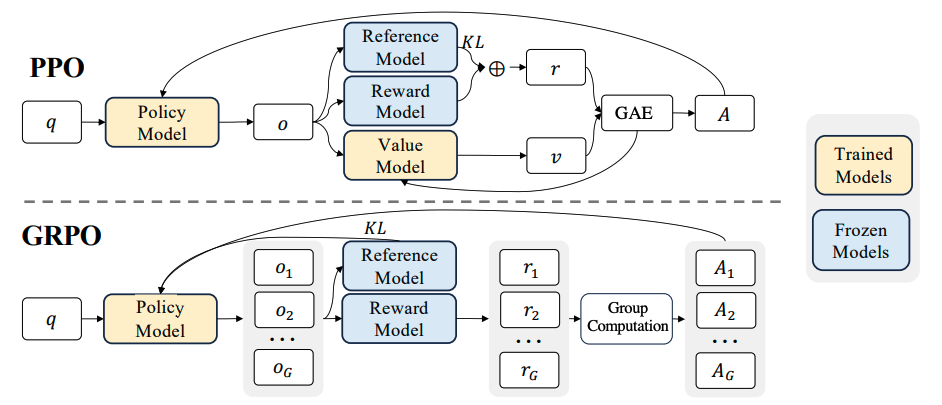
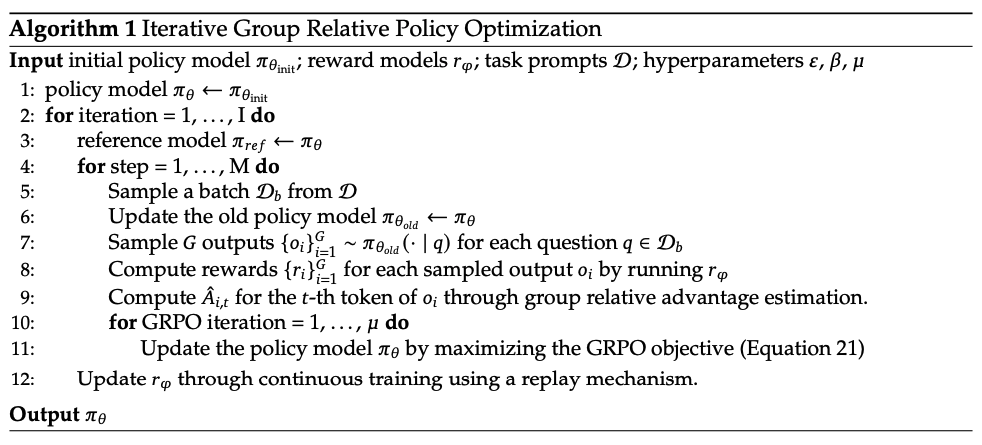

GRPO（Group Relative Policy Optimization）理解
GRPO的核心思想可以简要理解为Grouped PPO。
也就是说，对同一个问题\(q\), 一次性采样一组（\(G\) 个）完整回答，用组内相对优势（而不是 value baseline）来做 PPO-style 的 token 级策略更新，同时用KL正则把策略约束在参考模型附近。
这里的Group指的就是分组；Relative指的就是组内相对优势。

接下来，我想根据GRPO中涉及到的公式，和对应的伪代码，深入理解一下GRPO里面的细节；如果你对公式不感兴趣，那么可以直接跳过公式回顾和深入理解的部分。
公式回顾
原文中公式如下：
我感觉作者省略了一对括号，对数学不好的同学不太友好，因此这里给它加上，长成这样：
整个 GRPO 目标函数 \(\mathcal{J}_{\text{GRPO}}(\theta)\) 是一个期望收益（expected objective），即模型策略 \(\pi_\theta\)在大量不同任务（prompts）和生成结果(responses)上的整体表现水平（由 group-normalized advantage 加权，并减去 KL 正则项表示）。
因此，我们的目标是：通过调整 \(\theta\)，让这个期望收益尽可能大。
注：在实际训练中，为了兼容基于梯度下降的优化框架，通常做法是最小化其负值，即定义： $$ \mathcal{L}{\text{GRPO}}(\theta) = -\mathcal{J}{\text{GRPO}}(\theta) $$ 并对 \(\mathcal{L}_{\text{GRPO}}(\theta)\) 执行梯度下降。
深入理解
1. 最外层期望（Expectation）：在什么分布上进行优化？
其中, \(q\)表示一个 prompt（问题），从数据分布 \(P(Q)\) 中采样， \(P(Q)\)包含了不同类型的prompt，例如医学问题，VQA、报告生成等； \(\{o_i\}_{i=1}^G\)表示对同一个 \(q\)，用旧策略 \(\pi_{\theta_{\text{old}}}\) 生成的 G 个输出（completions）. 也就是说：对每个 prompt，我们并行生成 G 个回答，然后基于这些回答做优化. 这就是 GRPO 的“组内对比”思想.
进一步理解，这个期望可以表示："如果我们从真实 prompt 分布中随机挑一个 \(q\)，再用旧策略对它生成 \(G\) 个随机回答，然后计算 GRPO loss，那么这个 loss 的平均值是多少?"，而我们的目标是：通过调整 \(\theta\)（当前策略），让这个期望 loss 尽可能小。"
这里我们通过监督学习来做个类比，监督学习的目标函数如下：
\[ \mathcal{L}(\theta) = \mathbb{E}_{(x, y) \sim \mathcal{D}} \left[ \text{CrossEntropy}(f_\theta(x), y) \right] \]其中\(\mathcal{D}\)表示训练数据分布，\((x, y)\)表示一条样本（如图像+标签），CrossEntropy表示对这条样本计算的 loss。那么这个公式的整体含义可以表示为：在所有可能的数据上，模型预测的平均交叉熵损失。
但我们无法计算真实期望（因为 \(\mathcal{D}\) 未知），所以用 Monte Carlo 估计（即 mini-batch）：
\[ \hat{\mathcal{L}}(\theta) \approx \frac{1}{N} \sum_{i=1}^N \text{CrossEntropy}(f_\theta(x_i), y_i) \]也就是说，
期望 = 理论目标，求和 = 实际近似。回到 GRPO,完全一样的逻辑,对应关系如下：
监督学习 GRPO 数据分布 \(\mathcal{D}\) Prompt 分布 \(P(Q)\) + 旧策略生成分布 \(\pi_{\theta_{\text{old}}}\) 一条样本 \((x, y)\) 一组数据 \((q, o_1, ..., o_G)\) Loss 函数（如 CE） PPO-style clipped objective + KL penalty 期望 \(\mathbb{E}_{(x,y)\sim\mathcal{D}}[\text{loss}]\) \(\mathbb{E}_{q, \{o_i\}}[\text{GRPO loss}]\)
2. 分组平均 && Token平均：保持梯度稳定的同时拉齐不同序列长度的贡献
从下面的公式，可以看到这里有两层平均，外层平均表示对一个prompt产生的分组内部loss做平均，避免\(G\)变大导致梯度爆炸；内层对token再平均，使得不同长度的回答被归一化到相同的尺度，防止模型生成更长的token来刷reward。
具体地，对于每个 output \(o_i\)：计算其每个 token \(t\) 对应的 loss，其中\(|o_i|\)表示\(o_i\)的序列长度； 然后对所有 token 取平均（\(\frac{1}{|o_i|}\)）； 再对所有 G 个 output 取平均（\(\frac{1}{G}\)）。
3. PPO-style Clipped Objective
接下来我们看一下大括号内部，实际上是新旧策略之间的token级重要性采样比(Importance Sampling Ration, ISR)和优势值(Advantage)的乘积，具体地：
其中，\(\pi_{\theta}\)表示当前待优化的策略模型（policy），
\(\frac{\pi_\theta}{\pi_{\text{old}}}\)为ISR，
\(o_{i,t}\)表示第 \(i\) 个回答的第 \(t\) 个 token，
\(o_{i,<t}\)表示第 \(i\) 个回答中第 \(t\) 个 token 之前的前缀；
\(\hat{A}_{i,t}\)表示第 \(i\) 个 output 中第 \(t\) 个 token 的优势值；
clip(...)限制了ISR 在 \([1-\varepsilon, 1+\varepsilon]\) 范围内，防止策略更新过大；
最终取 min，这是标准PPO 损失，用于稳定训练。
接下来，我们还需要重点说明的是优势值的计算。\(\hat{A}_{i,t}\)的计算方式如下： 对每个 output \(o_i\)，先计算其总 reward \(r_i\)（如 accuracy、LLM judge 分数）； 然后对组内 reward 做标准化：
最后将 \(\hat{A}_i\) 广播到该 output 的所有 token 上（即 \(\hat{A}_{i,t} = \hat{A}_i\)）。这里\(\epsilon\)用于保持数值稳定。
4. KL 正则项（对齐 && 防止遗忘）
其中，\(D_{\text{KL}}[\pi_\theta \| \pi_{\text{ref}}]\)表示当前策略与参考模型（通常是 SFT 模型）之间的 KL 散度；\(\beta\)为超参数，控制正则强度；减号表示：我们希望最小化这个 KL，即不让新策略偏离参考模型太远。最后，让我们看一下GRPO原文中对KL散度的定义：
伪代码
原始论文中算法流程：

下面是我从ms-swift文档中摘抄的GRPO的伪代码，供大家理解。这里可以看到，代码中会在原始公式的整体加上负号，以最小化损失函数。
# ========== 1. Rollout Generation Phase ==========
prompt = "Question: Which is bigger? 9.11 or 9.9?"
# Generate multiple completions through parallel sampling
completions = rollout_function(
model=current_policy_model,
prompt=prompt,
num_generations=8, # Hyperparameter: number of samples per prompt
temperature=1.0 # Hyperparameter: sampling diversity
)
"""
completions = [
(completion 1) "The larger number is 9.11...",
(completion 2) "9.9 is bigger than...",
...
(completion 8) "After calculation, 9.11..."
]
"""
# ========== 2. Reward Calculation Phase ==========
# Evaluate generated completions using reward model
rewards = reward_function(
completions=completions,
ground_truth="9.11" # Expected correct answer
)
"""
rewards = [
(reward 1) 1.0, # Correct answer
(reward 2) 0.0, # Incorrect
...
(reward 8) 1.0 # Correct
]
"""
# Normalize rewards to advantages
rewards_mean = mean(rewards) # μ = 0.5
rewards_std = std(rewards) # σ = 0.25
advantages = (rewards - rewards_mean) / (rewards_std + 1e-8) # Standardization
"""
advantages = [
(advantage 1) 2.0, # (1.0 - 0.5)/0.25
(advantage 2) -2.0,
...
(advantage 8) 2.0
]
"""
# ========== 3. Policy Optimization Phase ==========
# Get token-level log probabilities from different models
current_logps = get_per_token_logps(current_policy_model, prompt, completions) # π_θ
old_logps = get_per_token_logps(old_policy_model, prompt, completions) # π_θ_old
ref_logps = get_per_token_logps(reference_model, prompt, completions) # π_ref
# PPO Clipped Objective
is_ratio = exp(current_logps - old_logps) # Importance sampling ratio: e^(π_θ - π_θ_old)
clipped_ratio = clip(is_ratio, 1-ε, 1+ε) # ε=0.2 typically
# Policy gradient term (dual form)
policy_loss = -mean(
minimum(is_ratio * advantages, # Unclipped objective
clipped_ratio * advantages) # Clipped objective
)
# KL Divergence Penalty (K3 estimator)
# KL(π_θ||π_ref) ≈ e^(logπ_ref - logπ_θ) - (logπ_ref - logπ_θ) - 1
kl_penalty = beta * mean(
exp(ref_logps - current_logps) -
(ref_logps - current_logps) - 1
)
# Total Loss = Policy Loss + KL Penalty
total_loss = policy_loss + kl_penalty
# ========== 4. Update Rule ==========
# Apply gradient descent to minimize total_loss
optimizer.zero_grad()
total_loss.backward()
optimizer.step()
参考资料
- DeepSeekMath: Pushing the Limits of Mathematical Reasoning in Open Language Models.(https://arxiv.org/pdf/2402.03300)
- https://swift.readthedocs.io/zh-cn/latest/Instruction/GRPO/GetStarted/GRPO.html
- Qwen & ChatGPT